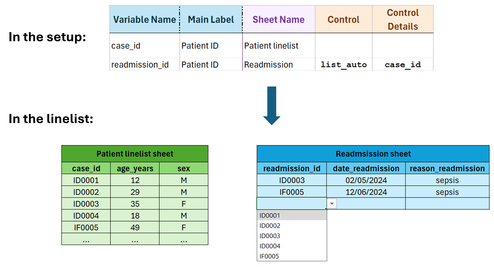
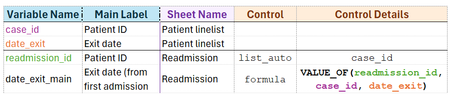

Create linelists with more than one entry sheets
You want the linelist to contain several data entry sheets. The important thing to think about is how the tables should be linked, if at all.
Independent data tables
If you need to create two independent data tables1, just use different sheet names in the Dictionary sheet.
Technically, a linelist with an “Info” and a “Patient linelist” sheet already has two entry sheets, one with a 1-dimension table and one with a 2-dimensions table.
Since the two tables are created independently, you could have two sheets with 2-dimensions table.
Non independent tables
Sometimes you need to refer to data from another table, whether it is to use in a formula, to copy data or to populate a dropdown menu.
Refer to a single value in a formula
It is straightforward to use the values of vlist1D variable in a formula: just use the name of the variable in the formula2.
Example: the linelist user wants a variable with the name of the health structure in the data but in your setup, one site fills one excel file. In this case, you can create a calculated column that gets the name of the facility from a metadata sheet so that data encoders do not have to fill the name of the health structure again and again and again:
IF(ISBLANK(case_id), ““, info_facility_name)
See the page on formulas and formulas controls
Link two tables
A more complex situation is when you have two 2-dimensions tables that are not independent. In this case, the tables should at minima be linked by a key.
Example of a user case:
- a main data entry sheet with general patient data (e.g. a Patient linelist sheet)
- a secondary entry sheet with additional variables for a subset of patients (e.g. readmission variables or extensive lab testing).
In this case, the natural way to link the tables is to have the ID of the patient in both tables.
Constrain possibles values for patient IDs in the secondary table with list_auto
In the user case above, the patients from the Readmission sheet are a subset from the Patient linelist sheet so we expect the IDs from Readmission to match the ones from Patient linelist.
The minimal (unsafe) option is to have two free text patient ID columns, one in each table, where data encoders enter IDs manually. This process however increases the risk of typing error and thus of merging nightmare.
A safer way is to create a categorical variable in the Readmission sheet whose dropdown menu is populated by values present in the case_id column of the Patient linelist sheet. As the data encoder can only choose from existing patients from the Patient linelist sheet, the opportunity for encoding error and thus unmatched patients is greatly reduced.3

Seethe section on list_auto and its control for a description on how to use the list_auto control.
Import values from the other table with VALUE_OF
In addition to key columns to be able to join the tables, it might be desirable to bring some of the patient data in the secondary table, to calculate new variables, or just to facilitate reading and understanding without having fill the value on each line.
For example, we might want to bring in the name and surname of the patient, without entering it again, or the date of exit, to be able to calculate the number of days between the exit of the first admission and the date of readmission.
The custom function VALUE_OF can do that. It works sort of like a LOOKUP function, except we provide variable names, and it matches the value you need.
It takes three arguments, all variable names:
VALUE_OF(key_variable1, key_variable2, variable_values)
key_variable1: the list_auto in the current sheet (the key column that contains IDs, e.g. readmission_id)
key_variable2: the source of the list_auto in the other sheet (the IDs from the main sheet, e.g. case_id)
variable_values: the variable which values we want to import.

key_variable2 and variable_values must be on the same sheet or the function will return nothing.
The function matches the values from columns key_variable1 and key_variable2, and returns values from variable_values column at the corresponding row.
If the function finds more than two matches, it will return the values from the first match (the first line found).
Footnotes
Example: a sheet containing patient data and a sheet containing bed occupancy data↩︎
These variables can take only one value, see the different sorts of tables for more information.↩︎
If data are exported in R or Stata, you will be able to merge/join them extremely easily with the two IDs variables.↩︎